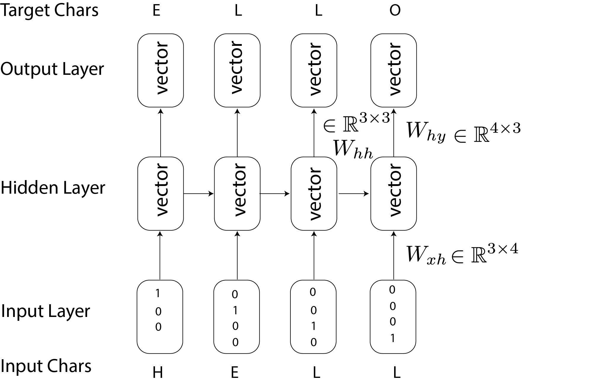
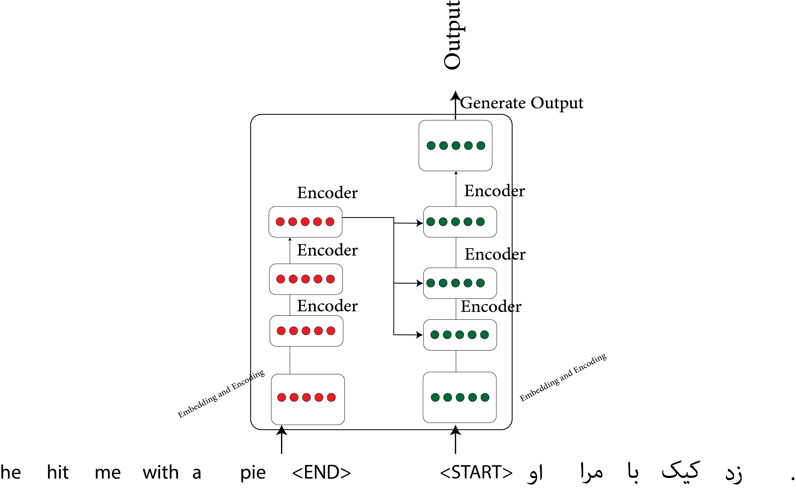
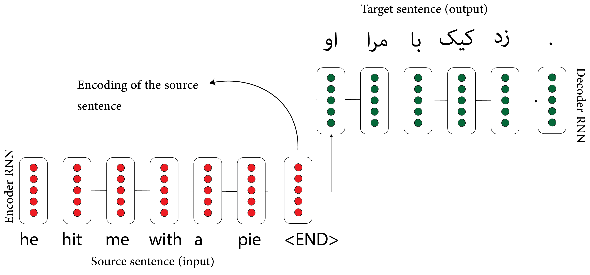

Sequence Models and Recurrent Neural Networks
Before we dive into recurrent neural networks (RNNs), let's start with an overview of hidden Markov models (HMMs). HMMs are used for sequential data—data that naturally follows a sequence, often in time. Examples include time series data, where events are ordered over time. But sequences aren’t just time-based; they appear in many forms, such as DNA sequences, language, or even the steps in a cooking recipe or building a structure.
Language Models
A language model assigns a probability to any sequence of words (or string of text): $$ p(w_1, w_2, \dots, w_n) $$ Using the chain rule, we can express this model as: $$ p(w_1, w_2, \dots, w_n) = p(w_1) p(w_2 | w_1) \dots p(w_n | w_1, \dots, w_{n-1}) $$ Language models let us generate word sequences by sampling each word from a probability distribution based on the previously generated text. This process creates entirely synthetic text.
Hidden Markov Model
In an HMM, each word in a sequence is generated from a hidden or latent variable. The model uses states, chosen probabilistically, to extend dependency on earlier words further back in the sequence. Here’s what the graphical model looks like:
In this model, $x_t$ is the observed word at time $t$, and $s_t$ is the hidden state. The probability of a word sequence is calculated as:
$$ p(x_1, \dots, x_n) = \sum_{s_1, \dots, s_n} \prod_{t=1}^n p(s_t | s_{t-1}) p(x_t | s_t) $$
However, computing this sum directly is impractical due to its size. Instead, we use the forward-backward algorithm—a dynamic programming method invented by Richard Bellman, to compute it efficiently. For estimating HMM parameters, we typically use maximum likelihood estimation with the expectation-maximization (EM) algorithm, which can be sensitive to initialization choices.
Recurrent Neural Networks
RNNs are a powerful type of neural network designed for sequence data, acting as language models similar to HMMs but with a key difference: the transitions in RNNs are deterministic, not stochastic. RNNs use distributed states (like embeddings) rather than fixed states. Here’s a typical RNN diagram:

The equations for an RNN are: $$ \begin{align} h_t &= \text{tanh}(W_{hh} h_{t-1} + W_{xh} x_t) \\ y_t &= W_{hy} h_t \end{align} $$ where $h_t$ is the hidden state, updated at each step using the previous hidden state and the current input $x_t$.
Long Short-Term Memory (LSTM)
LSTMs are an advanced variant of RNNs that solve some limitations of vanilla RNNs. LSTMs include mechanisms for “forgetting” or “including” certain information over time. This is particularly useful for tasks that require the network to remember information over long sequences, such as when maintaining subject-verb agreement in a language model.
In an LSTM, each hidden unit has multiple gates, including the forget and include gates:
$$ \begin{align} F_t &= \sigma(W_{fh} h_{t-1} + W_{fx} x_t + b_f) \\ I_t &= \sigma(W_{ih} h_{t-1} + W_{ix} x_t + b_i) \end{align} $$
The memory cell $c_t$ evolves according to: $$ c_t = F_t \odot c_{t-1} + I_t \odot \tilde{c_t} $$
where $\tilde{c_t}$ is an updated cell state.Transformers
Transformers represent the latest state-of-the-art in sequence models, using an attention mechanism instead of recurrent processing. Transformers allow us to look at sequences of data all at once, rather than step-by-step, making them much faster and able to capture longer dependencies in the data.
Here’s the main concept: each part of a sentence can attend to every other part, focusing on key segments for better context.

This method is called “self-attention” because each word’s representation is adjusted based on other words’ representations, using attention weights.
Sequence-to-Sequence Models
Sequence-to-sequence models are widely used in tasks like translation. These models consist of an encoder RNN that processes the input sequence and a decoder RNN that generates the output. Attention mechanisms help the model focus on relevant parts of the input for each decoding step, improving translation quality.

At each decoding step, attention mechanisms help the model connect directly to the encoder, focusing on specific parts of the input sequence that are relevant to the current output being generated.
This content is part of SDS 365/565 Intermediate Machine Learning, taught by Professor John Lafferty at Yale University, where I was a teaching fellow.